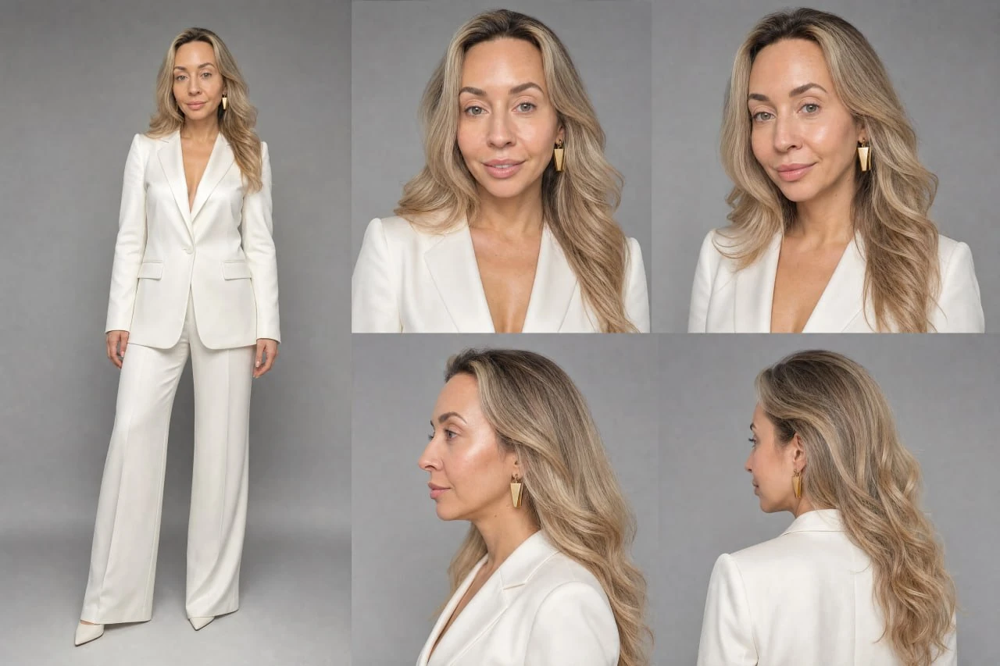

Фотографии
Начните со снимков, на которых хорошо видно лицо и особенности вашей внешности.
Карта персонажа сохраняет визуальную основу вашего образа. Используйте её для изображений и видео — с разным светом, одеждой и окружением.
Посмотреть пример
Начните со снимков, на которых хорошо видно лицо и особенности вашей внешности.
Соберите образ с нескольких ракурсов и оцените, насколько узнаваемо он передаёт вас.
Используйте этот образ в публикациях, визуальных сериях и видео. Сцену и подачу выбирайте под задачу.
Объяснить, что карта персонажа — постоянная визуальная основа, а не одна готовая фотография.
Портреты, обложки и сцены, которые поддерживают мысль поста.
↗02Персонаж становится проводником через последовательную историю.
↗03Образ соединяется со сценарием и голосом в экспертном ролике.
↗Карта персонажа может служить визуальным референсом для создания 3D модели: она помогает передать внешность с разных ракурсов. Сама модель, её мимика и подготовка к анимации требуют отдельной работы. Карта не превращается в готового 3D персонажа автоматически.
В OWAI речь об образе персонажа. Карта задаёт его внешность с разных ракурсов, чтобы использовать эту основу в новых изображениях и видео.
Да, сцену и стилистику подбирают под задачу. Перед публикацией важно оценить, как новый кадр сохраняет узнаваемость персонажа.
Чёткие снимки без сильных фильтров, на которых видны лицо и характерные детали. Следуйте подсказкам при создании персонажа.